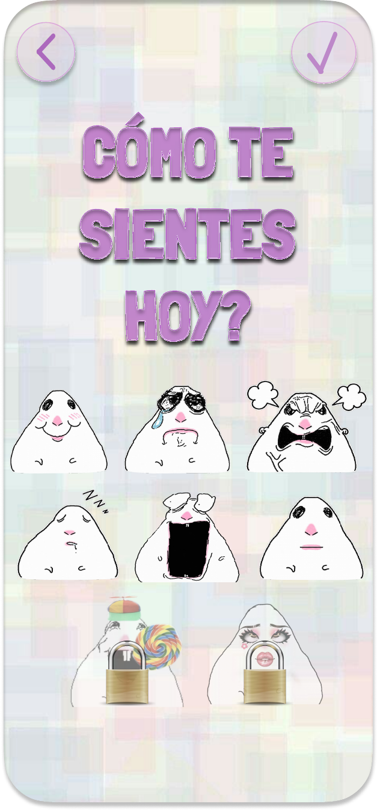

Presentación del proyecto
- Tarea principal: elegir la emoción del día, explicar por qué y guardarla
- P (personas): jóvenes que quieren conocerse mejor sin esfuerzo
- A (actividades): elegir emoción, escribir el motivo, editar y ver el calendario
- C (contexto): ratos cortos, desde el móvil y en cualquier lugar
- T (tecnologías): app móvil táctil, con imágenes y poco texto
